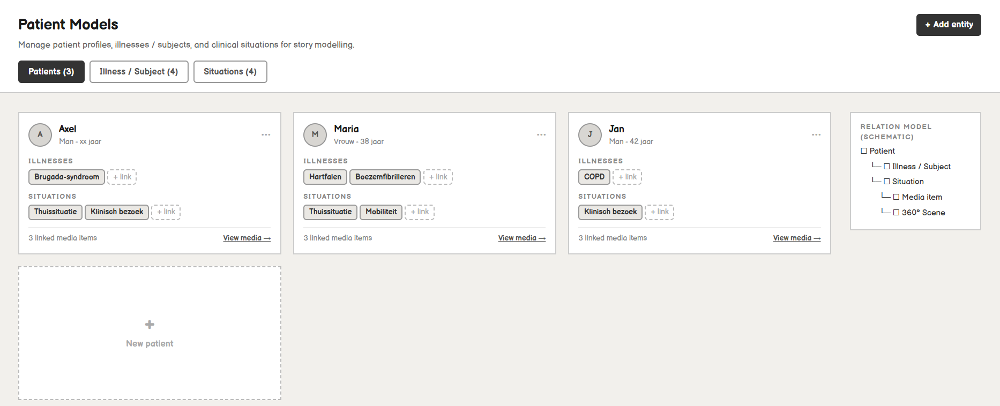
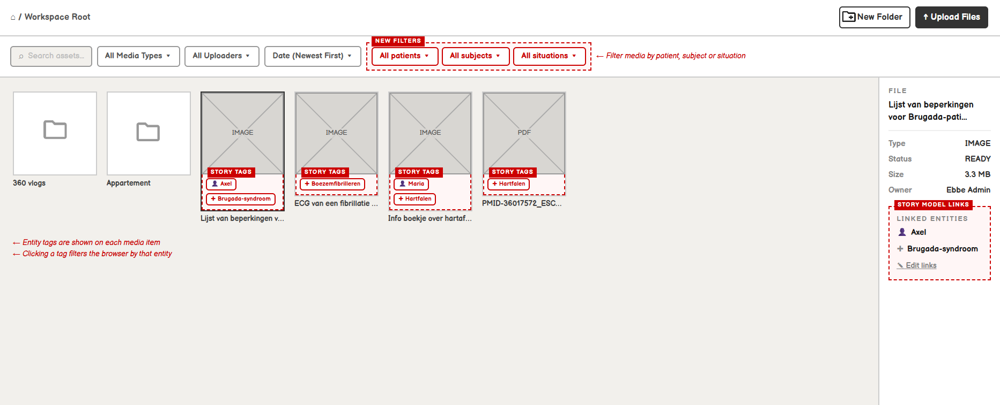
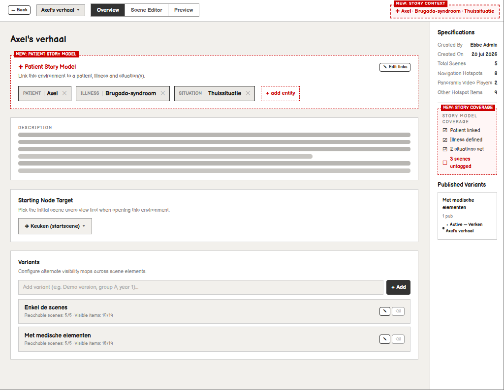

Test 3: Expliciete Verhaal Modellering
~10 minConcept: Wat is Verhaal Modellering?
Een patiëntenverhaal dat via media (zoals in Test 1 en Test 2) wordt gepresenteerd, wordt in de eerste plaats gedefinieerd door de maker of verzamelaar van deze media. Een 360°-omgeving is in essentie slechts een visueel medium om deze content in voort te brengen.
In deze test wordt onderzoecht of het waardevol en behulpzaam is als de webapplicatie beschikt over expliciete verhaal modellering. Omdat dit een puur conceptuele uitbreiding is waarbij de immersie van de 360° speler minder cruciaal is, maken we in deze test gebruik van wireframe mock-ups van de voorgestelde applicatie-uitbreidingen.
Grendel voor Conceptuele Ontwerpen
De getoonde interfaces en mock-ups zijn onderdeel van vertrouwelijk masterthesisonderzoek. Ga akkoord met de voorwaarden om de mock-ups te ontgrendelen en de evaluatie te starten.
Uw Opdracht
Bekijk de onderstaande drie functionele uitbreidingen zorgvuldig. Probeer te begrijpen hoe deze nieuwe concepten (Patiënten, Aandoeningen en Situaties) met elkaar en met de media verbonden zijn. Klik op de knoppen of wireframes om ze in het groot te bestuderen. Na het doornemen volgt de enquête.
De Introductie van een 5de Hoofdpagina: "Patient Models"
Herinner u de applicatiestructuur uit Test 2, bestaande uit 4 hoofdpagina's in de zijbalk (Team Dashboard, Media Storage, Environments, Publications). We introduceren nu een 5de pagina: "Patient Models". Binnen deze centrale pagina beheert de gebruiker drie expliciete entiteiten via drie losse tabs:
Tab 1: Patients
Hier beheert u de basisgegevens en medische profielen van de specifieke patiënten (zoals Axel) die centraal staan in de verhaallijn.Tab 2: Illnesses / Subjects
Hier modeleert u de specifieke aandoeningen of klinische onderwerpen in detail (bijv. het Brugada syndroom).Tab 3: Situations
Hier legt u verschillende contexten vast zoals: de fysieke thuissituatie, een specifieke klinische setting, een vervoer situatie of de werksituatie.
Gekoppelde Media Storage & Tagging
Dit is een wireframe mock-up die de originele Media Storage browser uit test 2 imiteert. De nieuwe of aangepaste elementen zijn in het rood gemarkeerd om de wijzigingen direct te accentueren.
- Media-items kunnen nu expliciet gekoppeld worden aan de gemodelleerde entiteiten.
- Via het rechterpaneel kunt u patiënt-, aandoening-, of situatietags toevoegen of verwijderen.
- Er is een filterbalk toegevoegd om direct alle media te tonen die aan bijvoorbeeld één specifieke patiënt of situatie gekoppeld zijn.

Environment Links & Scene Validatie
Dit toont het Overview tabblad van een specifieke 360° Environment (zoals Axel's verhaal). Wederom zijn de nieuwe interface-elementen in het rood aangeduid:
- De Environment als geheel bezit nu directe links naar specifieke patiënten, aandoeningen en situaties.
- Het rechterpaneel toont een checklist status die verifieert of er aan elk van de 3 entiteit-types een koppeling is gemaakt.
- Het systeem valideert direct of elke individuele 360° scene (als media-item) correct getagd is met een bijbehorende situatie.

Klaar met de conceptuele evaluatie?
U heeft nu alle wireframes en concepten bestudeerd. Klik op de onderstaande knop om uw feedback te geven over de toegevoegde waarde van expliciete verhaal modellering in het formulier voor Test 3.